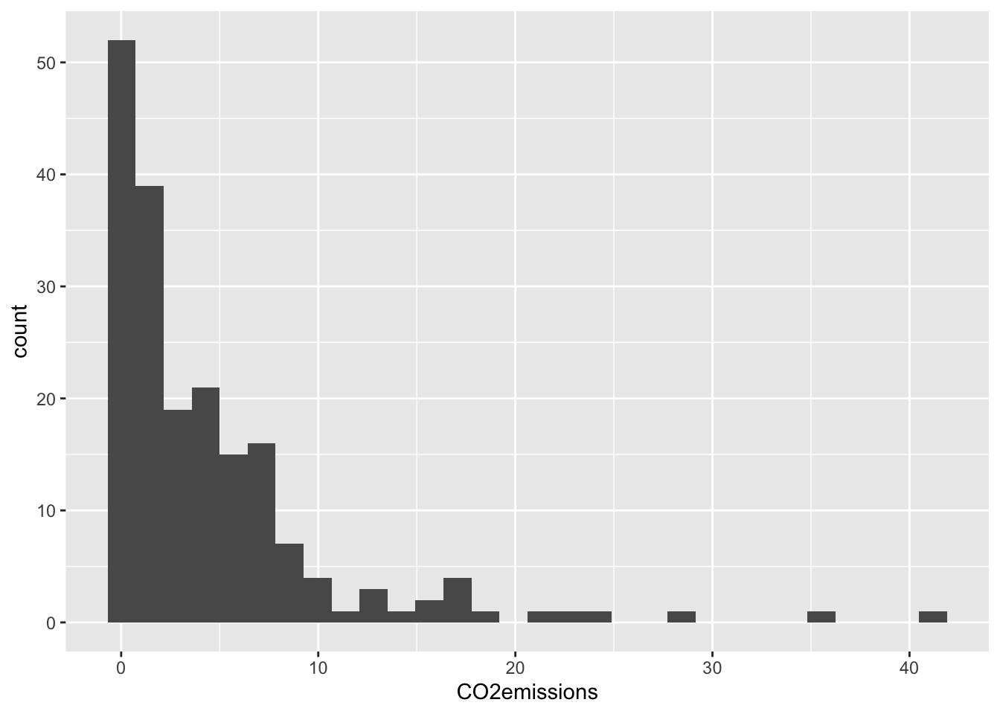

`stat_bin()` using `bins = 30`. Pick better value `binwidth`.Warning: Removed 4 rows containing non-finite outside the scale range
(`stat_bin()`).
EPI 525
October 30, 2025
For this problem:
87.08%
57.14%
\(6.22^{-14}\)%
38.29%
13.8%
37.74%
3354.05 seconds
6295.21 seconds
0.26μg/dl and 6.14μg/dl
Expected value: 108, sd: 3.29
0.223
Describe the distribution in the histograms below and match them to the box plots.
a) 2
b) 3
c) 1
Below you will be using a dataset from Gapminder to complete a few R exercises.
You don’t need to do it all at once, you can add more libraries as you realize you need them.
Import the dataset called “Gapminder_2011_LifeExp_CO2.csv” You can find it in the student files under Data then Homework. You will need to download the file onto your computer, and use the correct file path to import the data.
Using ggplot2, make a histogram of the variable CO2emissions.
`stat_bin()` using `bins = 30`. Pick better value `binwidth`.Warning: Removed 4 rows containing non-finite outside the scale range
(`stat_bin()`).